전체 지도
9/29 화 — 도착, 그리고 긴자
긴자는 기업이 문화 공간을 자기 브랜드의 얼굴로 운영하는 방식—DNP의 ggg, 폴라의 아넥스, 소니의 파크, 에르메스의 포럼—을 반나절 도보권 안에서 비교해볼 수 있는 동네입니다.
07:00 김포공항 집합, 09:00 출발, 11:20 하네다 T3 도착. 도착 로비에서 Welcome Suica 구매 진행(창구 또는 발매기 — 둘 다 2층 모노레일 개찰 옆).
롯폰기 3초메. 히비야선·오에도선 롯폰기역 도보 5분, 아자부다이힐즈 도보 13분. 체크인 전이니 짐만 맡기고 바로 점심으로. sotetsu-hotels.com

카이센동 한 그릇에 줄 서는 집. 웨이팅이 길면 도쿄 미드타운 식당가로 대체.
A. 긴자 트랙
긴자 1초메에서 남쪽으로 내려오는 도보 코스. 입장 마감이 가장 빠른 폴라(18:30)에서 시작해 가장 늦게 닫는 츠타야(21:00)에서 끝납니다. 관심 없는 곳은 건너뛰어도 동선은 그대로 유지됩니다.

- 1
폴라 뮤지엄 아넥스전시입장 18:30 마감 · 무료
기요카와 아사미 + 나와 코헤이 ‘보이지 않는 정원’ (9.16–11.8). 화장품 기업 폴라가 운영하는 무료 현대미술 갤러리. po-holdings.co.jp/m-annex
- 2
.jpg?width=300)
- 3
긴자 메종 에르메스 르 포럼전시~19:00 · 무료
앤 베로니카 얀센스 ‘도쿄 긴자 4-1번지 5초메’ (9.11–2027.1.11). 렌조 피아노의 유리블록 건물 자체가 절반. 길 건너 소니 파크(수직 공원)도 바로 옆이라 잠깐 들르기 좋습니다. hermes.com/maison-ginza sonypark.com

- 4
- 5
ggg 긴자 그래픽 갤러리전시~19:00
타나카 요시히사 ‘ARCHIVE / ACHIEVE’ (9.4–10.21). DNP가 1986년부터 운영하는 그래픽 전문관. dnpfcp.jp/gallery/ggg
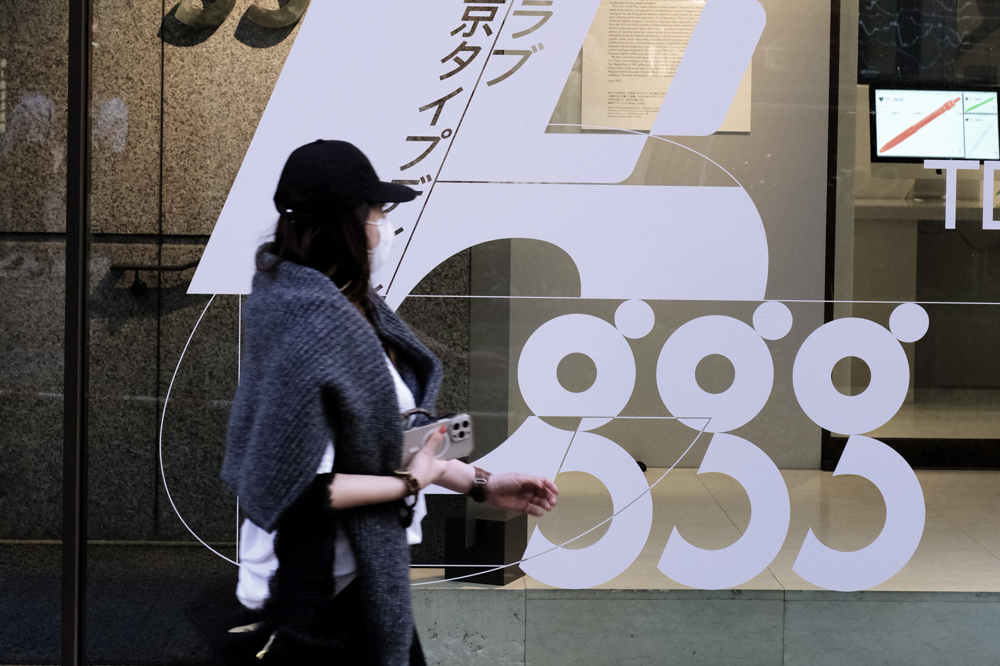
- 6
B. 텐도목코 트랙
텐도목코 쇼룸(하마마쓰초) — 야나기 소리 버터플라이 스툴을 만든 성형합판 가구의 본가. 견학 예약제, 17:00까지, 화요일 정상 영업. 다이몬역에서 도보 3분이라 숙소에서 가장 빨리 닿는 트랙입니다. 관람 후 아사쿠사선 다이몬 → 히가시긴자 약 8분으로 이동해 16시대에 A트랙 코스에 합류 — 마감이 늦은 곳들(이토야·DSM·츠타야)은 그때부터도 충분히 돌 수 있습니다. tendo-mokko.co.jp
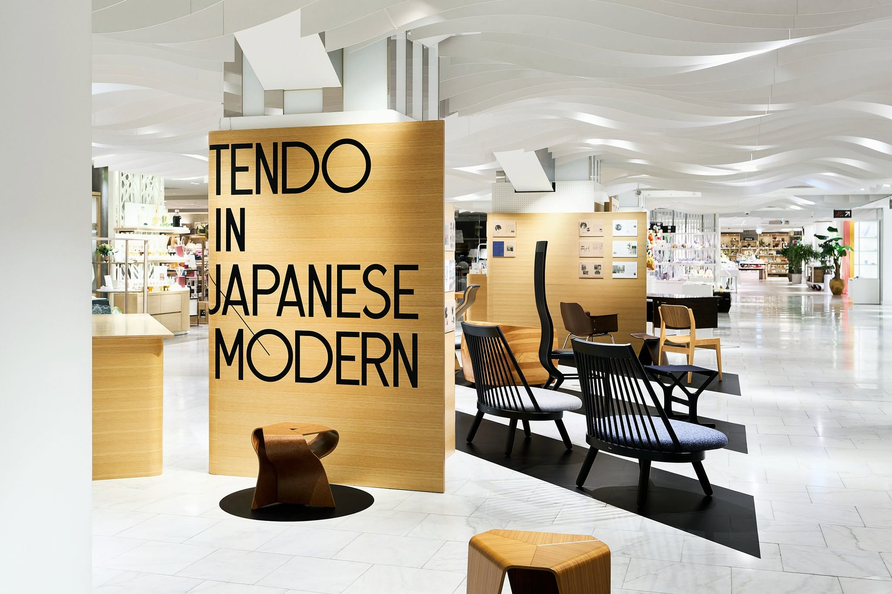
식사 후 귀가: 긴자 → 히비야선 → 롯폰기, 환승 없이 약 15분.
9/30 수 — 아자부다이힐즈, 요코하마
오전은 초고층 개발지의 몰입형 미디어아트, 오후는 항구 도시의 리노베이션 지구. 자본이 만드는 무경계의 스펙터클과, 보존·재생이 만드는 장소의 경험을 하루 안에서 비교하게 됩니다. 마무리는 오산바시 데크의 야경.
예약 시간 엄수(재입장 불가). 신작 포함 75개 이상 작품군의 ‘지도가 없는 뮤지엄’. 작품 간 경계가 없어서 공간 연출과 인터랙션 설계를 뜯어보기 좋습니다. teamlab.art/e/tokyo
특별전 ‘우주의 비대칭성에 대하여’ (7.8–10.8) — Light Sculpture - Flow 공간 재개를 기념한 신작 시리즈 Asymmetric Existence·Chromatic Existence. 물질 표면 없이 빛의 흐름과 질서만으로 조각을 만든다는 개념 — 방문일이 회기 안에 들어갑니다. teamlab.art/concept/asymmetry-universe
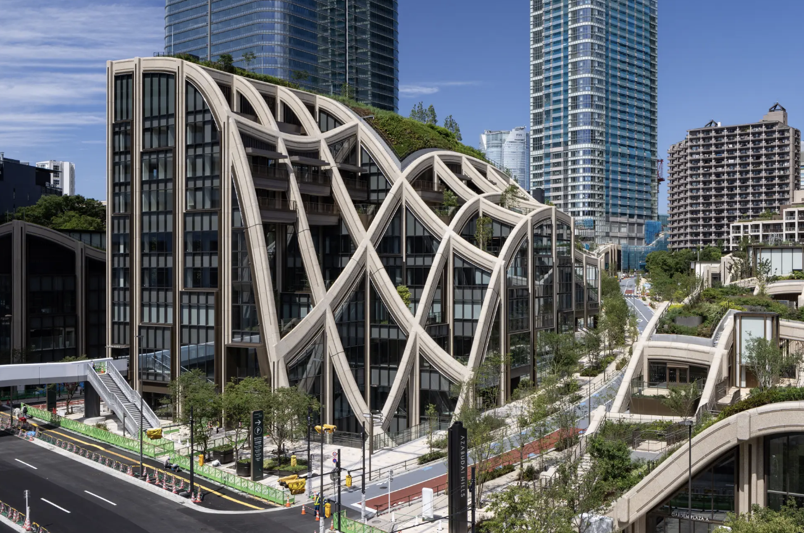
아자부다이힐즈 갤러리 — 사카모토 류이치 + 다카타니 시로 ‘async–immersion / Ambient Kyoto–Tokyo’ (8.28–10.15). 사운드 중심 몰입형 설치. 오전 팀랩과 같은 ‘몰입’이라는 말이 얼마나 다른 결과가 되는지 비교해볼 것. azabudai-hills.com
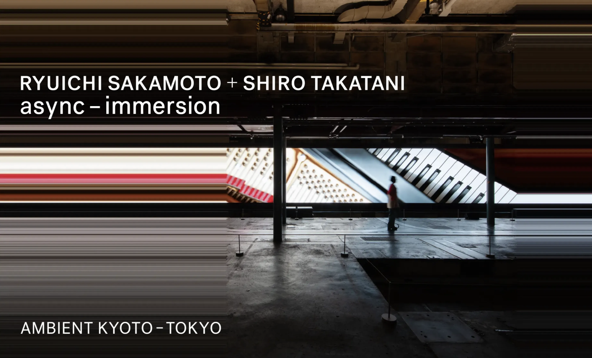
파미마 파크 AZABUDAI — 가미야초역 쪽 신규 점포. NIGO 크리에이티브 디렉션, 원더월 가타야마 마사미치 설계. 편의점이라는 포맷의 브랜딩 실험. family.co.jp
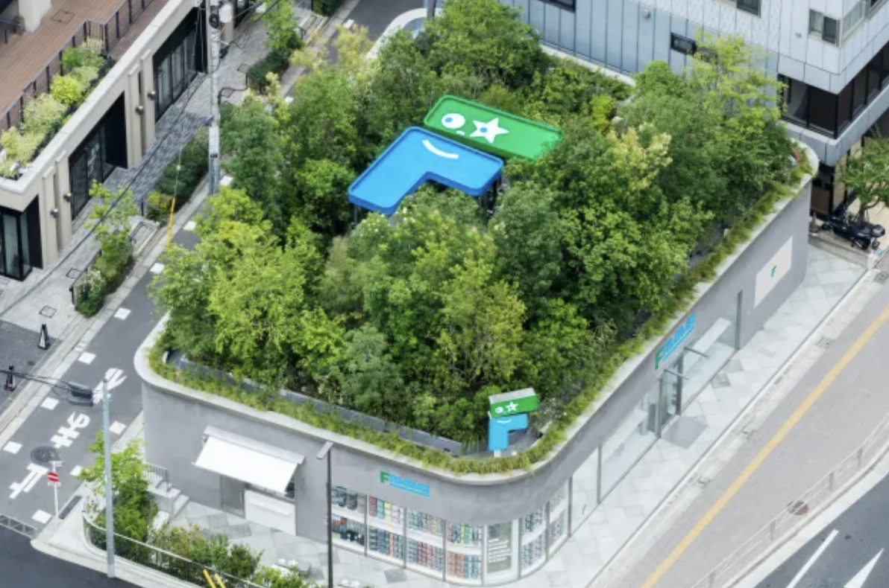
오가키서점 아자부다이힐즈점 — 1942년 창업한 교토의 서점 오가키쇼텐(大垣書店)이 낸 도쿄 진출점. 책과 함께 공예·아트 큐레이션 코너를 갖춰, 서점이라는 포맷이 문화 편집 공간으로 확장되는 최근 흐름을 보여줍니다. 자유탐방 중 들르기 좋은 곳. books-ogaki.co.jp
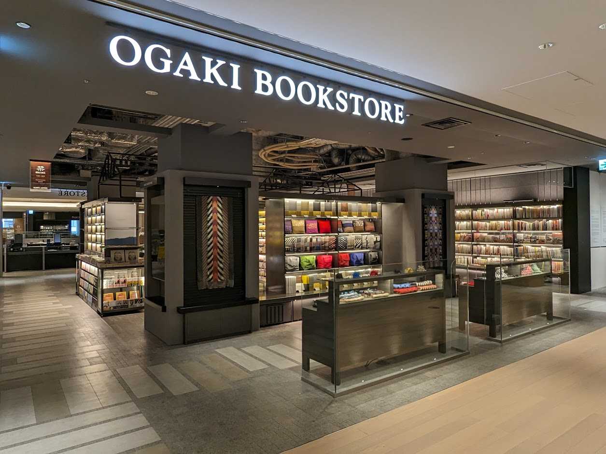
그 밖에 들를 만한 곳 — 헤더윅 스튜디오가 설계한 저층부 가든 플라자와 중앙광장(단지의 디자인적 핵심은 사실 이 랜드스케이프), 모리 JP 타워 오피스 로비 천장의 올라퍼 엘리아슨 상설작 《상호 연결된 지금이 조화를 이루는 주기》, 중앙광장 잔디밭의 나라 요시토모·소네 유타카·잔 왕 퍼블릭 아트, 페이스 갤러리 도쿄(무료), 33층 스카이 로비(무료 전망), 지하의 아자부다이힐즈 마켓.
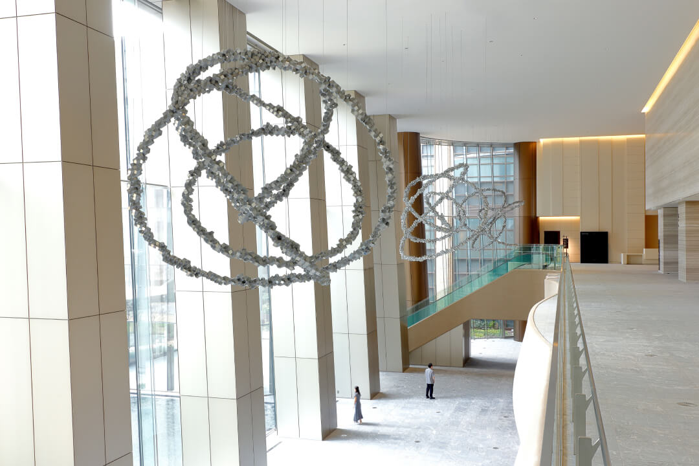
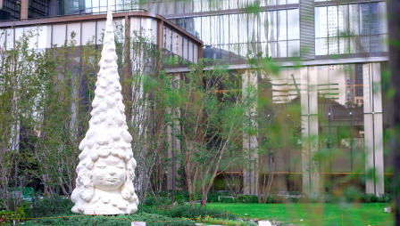
위가 통째로 오피스 타워라 평일 12–13시가 직장인 피크 — 15분 먼저 들어가는 것만으로 체감 붐빔이 완전히 달라집니다. 예산 2–3천 엔 기준 1순위는 지하 1층 아자부다이힐즈 마켓 — 34개 전문점이 한 층의 시장 홀에 모인 국내 최대급 푸드마켓으로, 이트인 좌석은 점포마다 딸려 있어 메뉴별로 팀을 나눠 각자 줄 서서 먹는 방식입니다(예: 파라 야자와의 와규 함박, 중화 구이 덮밥, 토요스 직송 선어점, COMME’N 베이커리 — 대체로 1–2천 엔대). 매장 간 거리는 끝에서 끝까지 1–2분이라 흩어져도 서로 보이는 범위이고, 식후 재집합 장소만 하나 정해두면 됩니다. 예약 없이 유연하고 팀랩에서 동선도 가장 가깝습니다. 여유 있게 앉고 싶으면 Balcony by 6th(타워 플라자 3층, 구 6th by ORIENTAL HOTEL) — 135석 올데이 다이닝이라 4–5명씩 나눠 앉기 좋고 예약도 되지만, 단품 2천 엔대 + 1인 1드링크제라 실질 1인 2,500–3,500엔으로 예산 상단을 칩니다.
단게 겐조 설계(1989), 2024년 리뉴얼 재개관. 좌우로 뻗은 대칭 파사드와 계단식 대공간 ‘그랜드 갤러리’는 지나가며 보는 것으로 충분하고, 한 시간을 모리 유코전에 집중합니다. 전시가 열리는 신설 ‘갤러리 9’은 유리로 둘러싸여 앞 공원의 빛과 풍경이 작품과 호응하는 공간으로, 관람 무료 — 예매·발권 절차가 없습니다. yokohama.art.museum
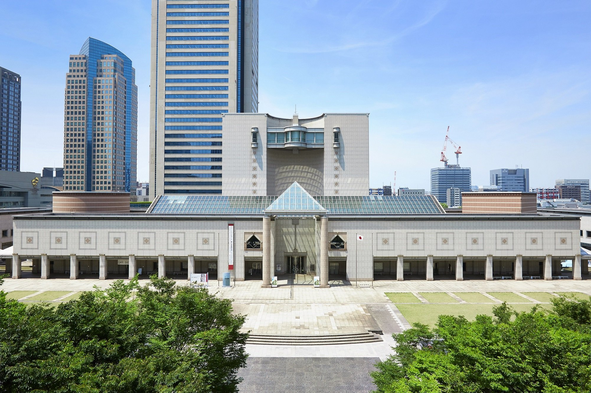
모리 유코 개인전 (7.24–11.23) — 2024년 베네치아 비엔날레 일본관에서 화제를 모은 ‘Compose’의 귀환·재구축전. 일용품·자연물·기기를 매개로 불규칙한 움직임과 빛, 소리를 만들어내는 인스탈레이션 작품군 — 키네틱·사운드 설치의 현재를 보여주는 전시입니다.
인스턴트 라면이라는 일상 제품 하나가 브랜딩·아카이브·전시디자인의 사례가 되는 곳. 16:15 입관해 히스토리 큐브를 먼저 훑고, 16:30 회차 마이 컵누들 팩토리(약 30–45분)에서 전원이 자기 컵을 디자인해 포장까지 — 방금 벽에서 본 3,000개 패키지 계보에 각자의 한 개를 보태보는 체험입니다. 예약 완료 — 16:30 회차 이용권부 입관권 10매. 당일 1층 키오스크에서 확인 코드(구매 확인 메일)로 발권 후 입장, 지정 시간 엄수. cupnoodles-museum.jp
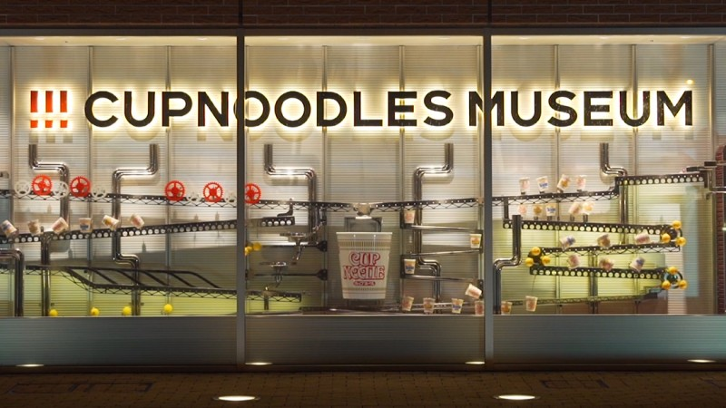
인스턴트 라면 히스토리 큐브 — 1958년 치킨라멘부터 약 3,000종의 패키지가 연대순으로 벽면을 채우는 방. 한 제품군의 패키지 디자인 변천을 한 벽에서 통람하는 그래픽 아카이브로, 서체·색·로고가 시대에 따라 움직여온 궤적이 물량으로 보입니다.
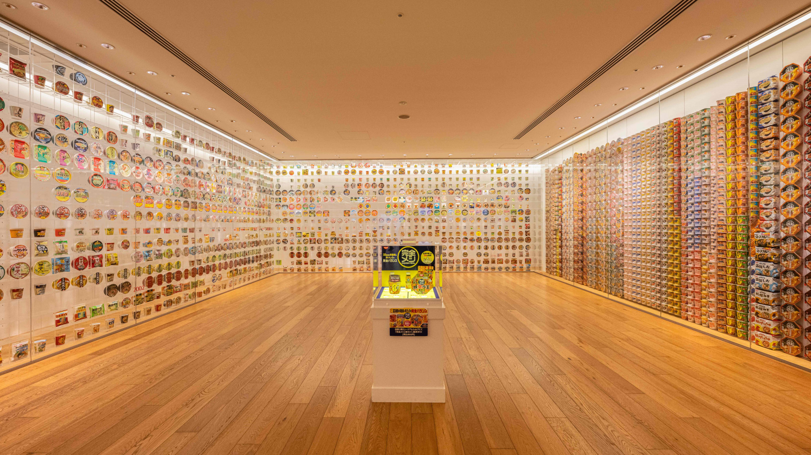
안도 모모후쿠 스토리 · 크리에이티브 싱킹 — 창업자의 발명 과정을 ‘거꾸로 생각한다’ 등 여섯 개의 사고 키워드로 재편집한 전시실들. 기업 창업사를 위인전이 아니라 추상화된 사고법의 체험 공간으로 번역한 전시 기획 자체가 관찰 대상이고, 치킨라멘을 개발한 연구 오두막의 실물 재현도 있습니다.
사토 카시와의 토탈 디렉션 — 로고, 사이니지, 전시실의 여백, 동선 그래픽까지 한 사람의 아트 디렉션이 건물 전체를 관통합니다. 백색 공간에 빨간 로고 하나로 긴장을 만드는 방식은 현장에서 걸어봐야 체감되는 부분 — 오전에 본 파미마 파크(NIGO×원더월)와 같은 계열의 질문을 뮤지엄 스케일로 확장한 셈이라 비교해볼 것.
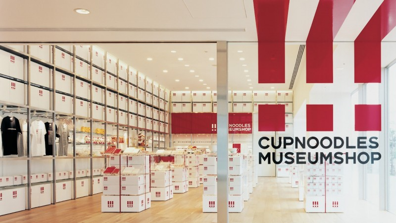

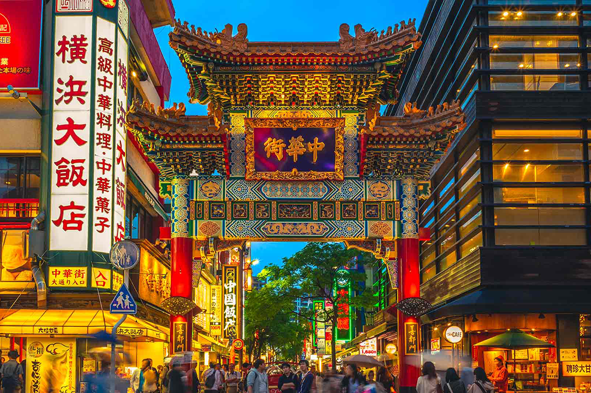
FOA(포린 오피스 아키텍츠) 설계, 2002. 지붕 전체가 물결치는 목재 데크 광장인 랜드스케이프 건축의 세계적 아이콘으로, 무료 개방입니다. 완전히 어두워진 시간이라 미나토미라이 스카이라인과 아카렌가의 야경이 절정입니다. osanbashi.jp
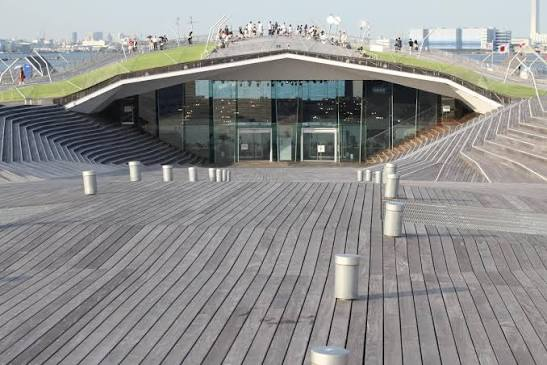

10/1 목 — 타카나와, 그리고 트랙별 탐방
오전은 전원이 올해 3월 개관한 MoN Takanawa로 갑니다. 오후는 전공·관심사에 따라 네 갈래로 흩어졌다가 18:30 시부야 히카리에 d47 뮤지엄에서 합류해 함께 보고 식사합니다.
2026년 3월 개관. 구마 겐고가 외장을 맡은 나선형 저층 건물로, 내부는 4층까지 뚫린 아트리움을 나선 계단과 슬로프가 감아 올라가는 입체 회랑 구조 — 걷는 것 자체가 관람입니다. 방문일은 시즌 전시 교체기(다음 프로그램 10/10 시작)로 유료 전시가 없어, 관 자체 — 건축·브랜딩·무료 존 — 를 75분에 압축해 보고 남는 시간을 주변으로 돌립니다. 10:00–11:15 나선 회랑 한 바퀴: 로비 사이니지 → 라이브러리 → 2층 숍 → 옥상 순서로 오르며 아래 항목들을 확인 · 11:15–11:45 앞 공원에서 다카나와 축제 유적과 게이트웨이역 목조 지붕 · 11:45–12:45 점심 — 1층 MoN Park Cafe by Spiral 등 관내에서(12시 전 진입이라 대기가 짧습니다) · 12:45 센가쿠지역으로 도보 7분 이동, 여유가 있으면 역 바로 옆 센가쿠지(아코 47낭인 묘) 경내 15분 · 13:00 출발. montakanawa.jp
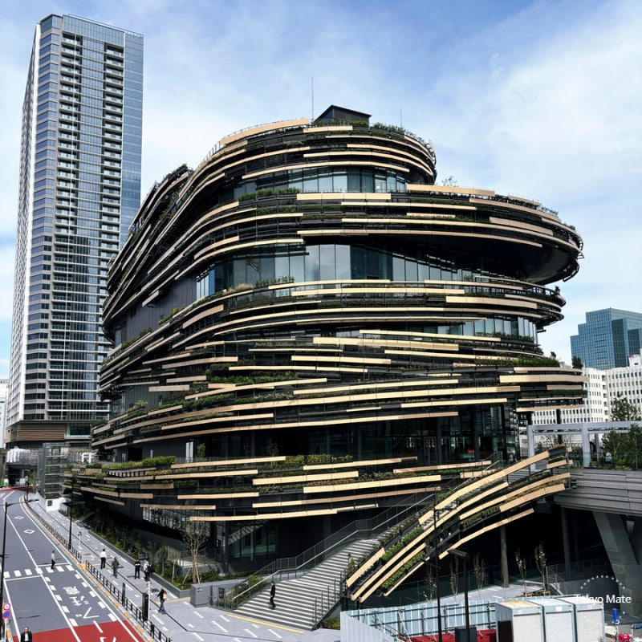
MoN Shop by Spiral — 2층. 아오야마 스파이럴(와코루 아트센터)의 Spiral Market이 운영하는 아트·잡화 셀렉트숍. 한쪽에 펜타그램이 디자인한 MoN 오리지널 굿즈 코너(토트백·클리어파일·통행수형 키홀더 등)가 있어, 뮤지엄 굿즈가 브랜딩의 연장이 되는 사례를 볼 수 있습니다. montakanawa.jp/facilities/shop
펜타그램의 브랜딩·사이니지 — 로비의 사인과 플로어가이드부터 입체 조형까지 펜타그램이 관 전체의 크리에이티브를 담당. 건축(구마 겐고)–브랜딩(펜타그램)–운영(스파이럴)이 ‘나선’이라는 하나의 개념으로 관통되는 구조를 현장에서 확인할 것.
미래문화의 문 — 로비 상설. 각 분야 32인이 고른 ‘100년 뒤에 잇고 싶은 문화’를 전시하는 설치.
MoN 라이브러리 — 지하 1~3층을 관통하는 벽면 책장. 진행 중인 프로그램·아티스트 관련 서적과 굿즈가 꽂히고, 직접 꺼내 볼 수 있는 구역도 있습니다. 무료 퍼블릭 스페이스(단, 지하 공연 운영에 따라 접근 범위가 달라질 수 있음).
옥상 — 하나미 테라스 · MoN 신사 · MoN 팜 — 나선 동선의 종착점. 벚나무를 심은 하나미 테라스, 작은 신사, 텃밭(MoN Farm)이 옥상에 함께 있어, ‘100년 앞의 문화’를 표방하는 이 관이 계절·신앙·경작이라는 오래된 시간 단위를 건물 꼭대기에 올려둔 구성 자체가 읽을거리입니다. 도시 조망도 여기서.
그 밖에 — 1층 MoN Park Cafe by Spiral(파사드 나선에서 착안한 ‘스파이럴 코로네’), 앞 공원에서 보이는 다카나와 축제(築堤) 유적 — 1872년 일본 최초의 철도가 바다 위를 달리도록 쌓은 해상 제방으로, 2019년 재개발 공사 중 발굴돼 일부가 현지 보존된 사적, 그리고 구마 겐고의 목재 격자 지붕이 덮인 다카나와 게이트웨이역 자체.
네 트랙 모두 시부야 히카리에 8층 d47 뮤지엄에서 다시 만납니다 — 18:30 기준, 18:15까지 도착.
전시 + 정원 (~16:00)
+ 브랜드 건축 거리
14:00 – 15:00 · 전시 약 1시간
+ Bookshop TOTO
+ 카리모쿠 커먼즈
A. 네즈미술관 — 미술관·정원
- 네즈미술관 — 구마 겐고 설계. 대나무 진입로, 낮은 조도의 전시실, 도심에 숨겨진 정원까지. 온라인 날짜·시간 지정 예약제(14:00 슬롯, 변경·취소 불가, 입관 후엔 시간 제한 없음) nezu-muse.or.jp
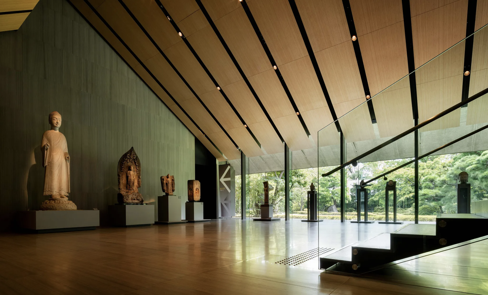
B. 패션 — 아오야마→하라주쿠 스윕
- 요지 야마모토 아오야마 — 브랜드 세계관이 매장 건축까지 관통하는 예. 미나미아오야마 일대는 프라다(헤르초크 & 드 뫼롱)·꼼데가르송 등 브랜드 건축이 밀집한 거리라, 정해진 시각 없이 걸으며 관심 매장을 골라 들어갑니다 yohjiyamamoto.co.jp
- 아카이브 스토어 — 요지·마르지엘라 등 디자이너 아카이브를 박물관식으로 진열하는 빈티지 숍. 위치는 아오야마가 아니라 시부야 진난(와코 빌딩 지하 1층, 15시 오픈) — 서점과의 앞뒤 순서는 지도를 보고 자유롭게 정하면 됩니다 archivestore.jp
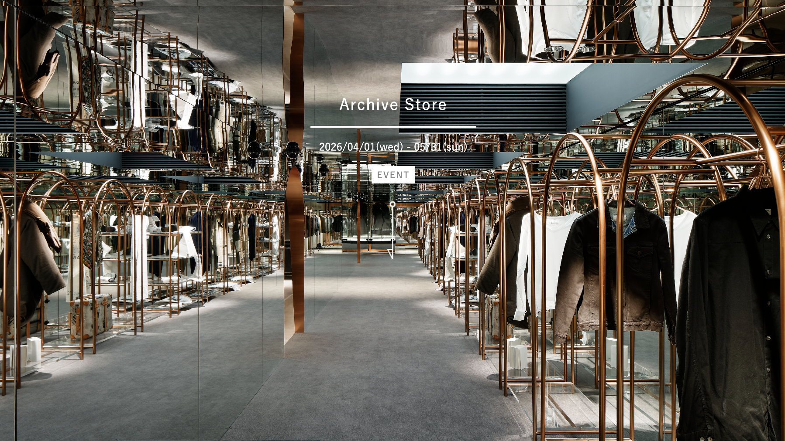
C. NTT ICC (하쓰다이) — 미디어아트
- NTT ICC — 1997년부터 이어진 미디어아트 전문 기관. 무료 존 포함, 18:00까지. 기술 기반 작품의 보존·전시 방식을 볼 수 있는 드문 곳 ntticc.or.jp
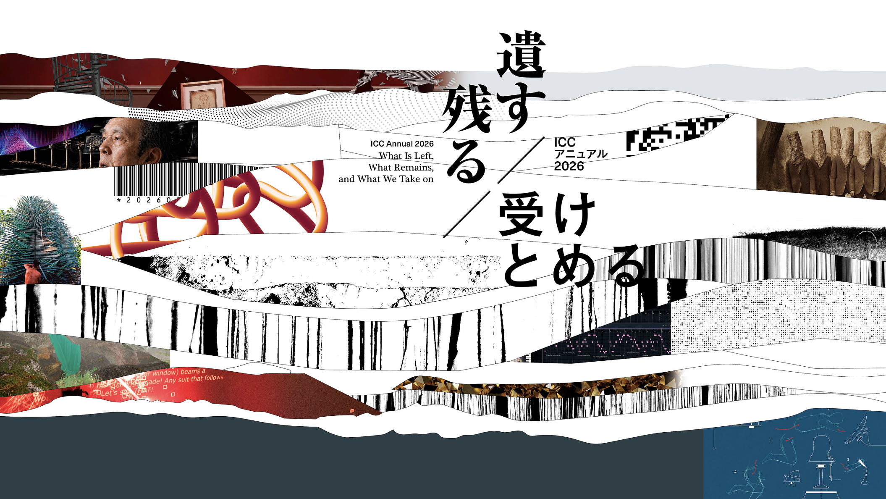
D. 건축·가구 — 노기자카→미드타운→니시아자부
- 갤러리·마 — TOTO가 운영하는 건축 전문 갤러리(노기자카역 1분 · 무료 · ~18시). 전시 회기 중(9/17–11/29)이고, 병설 Bookshop TOTO는 건축 전문 서점 — 이 트랙의 서점 시간이기도 합니다 jp.toto.com/gallerma
- HIDA 도쿄 미드타운점 — 히다 지역 목공 가구 (갤러리·마에서 도보 8분) hidasangyo.com
- 카리모쿠 리서치 센터 — 제품화 전 프로토타입과 가공·컬러 견본을 직접 만질 수 있는 리서치 거점(니시아자부, 12–18시). 도보 1분의 카리모쿠 커먼즈 도쿄까지 함께 karimoku-research.com
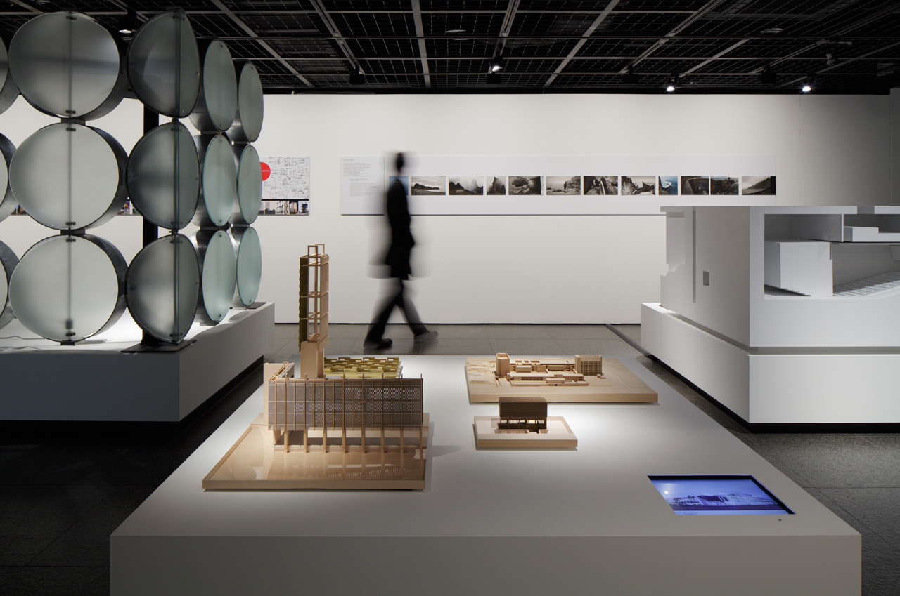
16시 전후 — A·B·C 합류: 서점 세 곳
- 파피에 라보 — 활판인쇄·종이 전문(진구마에 1초메, 하라주쿠역 북쪽. ~19시, 월·화 휴무) papierlabo.com
- Utrecht — 독립출판·아트북, 도쿄아트북페어를 공동 주최해 온 서점(진구마에 5초메, 12–19시 · 월 휴무). 파피에에서 도보 약 15분 utrecht.jp
- 아오야마 북 센터 본점 — 디자인·건축·사진서가 강한 대형 서점(아오야마도리 UN대학 옆, ~21시). 성격은 긴자식스 츠타야와 가까운 계열. Utrecht에서 도보 3분, 시부야까지 도보 13분 — 순회의 마지막이자 집합 동선의 시작점입니다 aoyamabc.jp
D&DEPARTMENT가 47개 도도부현의 디자인을 수집·전시하는 곳으로, ‘로컬 리서치를 전시로 만드는 법’의 교과서. 전시실 하나 규모라 30분이면 충분하고, 일찍 도착한 팀은 18:00부터 먼저 관람해도 됩니다. 같은 8층의 전망 공간에서 시부야 스크램블 교차로가 내려다보입니다 — 저녁 시간대라 교차로의 인파와 대형 스크린들이 가장 잘 보이는 때이기도 합니다. hikarie8.com/d47museum

NIPPON의 47인 2026 CULTURAL STAY — 47숙(宿)전 (9.18–11.29, 무휴 · 12:00–20:00 · 입장 도네이션제) — 제38회 기획전의 주제는 ‘숙소’. 자는 곳이던 숙소가 지역 문화의 체험·학습·교류가 일어나는 ‘활동의 장’으로 바뀌는 흐름 속에서, 47개 도도부현에서 한 명씩 그런 장소를 꾸리는 숙소의 주인(主)들을 소개합니다. 선정 기준 자체가 수업감 — 지역 문화를 공간·음식·프로그램으로 체감할 수 있고, 그 체험이 디자인 의식을 갖고 편집되어 있을 것. 47인의 에피소드를 4컷 만화로 풀고, 주인들이 고른 여행 도구를 파는 특설 숍과 팟캐스트 음성 가이드까지 — 전시·출판·상품·오디오로 하나의 리서치를 다층 전개하는 D&DEPARTMENT 방법론의 실례입니다. d-department.com

귀가: 시부야→롯폰기는 지하철 직통이 없어서 도에이버스 도01(시부야역앞→신바시행)이 정답 — 롯폰기역앞 하차, 약 20분. 늦어지면 JR 에비스 → 히비야선 → 롯폰기.
10/2 금 — 롯폰기, 교바시, 귀국
마지막 날은 디자인 뮤지엄의 정석 코스. 아티존의 소트사스전은 10/4 종료라 이 일정이 마지막 기회입니다. 관람 후 16:00에 공항으로 출발합니다.
미야케 잇세이·사토 타쿠·후카사와 나오토가 만들고 안도 다다오가 설계한 디자인 전문관. 지붕 한 장이 땅으로 접혀 들어가는 건물. 2121designsight.jp

‘호조키’에서 배우다 — 삶을 다시 엮는 작은 건축 (8.28–2027.1.11) — 가모노 초메이의 방장(方丈) 오두막을 출발점으로 ‘최소한의 건축’을 다시 묻는 기획전. 2121designsight.jp
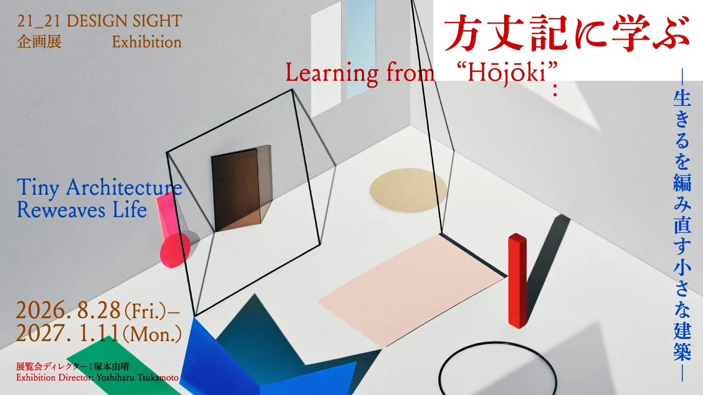
구로카와 기쇼의 물결치는 유리 파사드. 자체 컬렉션이 없는 국립 아트센터라는 제도 실험이기도 합니다. 아트샵 SFT까지—건축과 샵 중심으로 짧게. nact.jp

브리지스톤 미술관을 2020년 전면 재개관한 사립관. artizon.museum

에토레 소트사스 — 디자인은 마법이 시작되는 곳에서 시작된다 (6.23–10.4) — 멤피스의 창시자. 올리베티 산업디자인부터 세라믹·유리까지. 이틀 뒤 폐막. artizon.museum
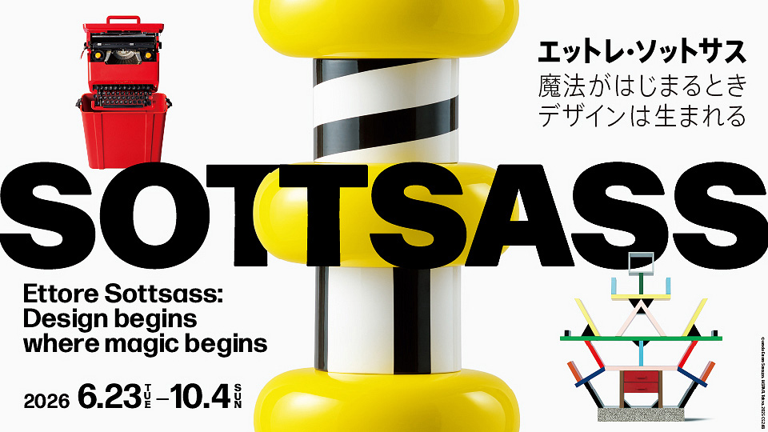
첫날의 역순 그대로: 롯폰기 → 오에도선 → 다이몬 → 도보 4분 하마마쓰초 → 도쿄 모노레일 → 하네다 T3. 약 40분, 환승 1회. 퇴근 시간대 전에 움직이는 데다 도착 후 여유가 세 시간이라, 지연 변수에 흔들리지 않는 출국입니다.
체크인 후 저녁은 공항에서 느긋하게. 19:55 출발, 22:15 김포 도착.
공통 메모
- 교통카드 — 첫날 하네다에서 Suica/PASMO(모바일 가능) 준비. 이 일정의 모든 대중교통을 카드 하나로 탑니다.
- 예약이 필요한 곳 — teamLab Borderless(예약 완료), 컵누들 뮤지엄 팩토리 16:30 회차(10매 예약 완료 — 당일 키오스크 발권), 아티존 소트사스전(예매 완료), 네즈미술관(온라인 날짜·시간 지정, 네즈 트랙 인원 확정 후 14:00 슬롯 구매), 텐도목코 쇼룸(견학 예약제). 네즈는 구매 후 변경·취소가 안 되며, 모리 유코전은 무료라 예약이 필요 없습니다.
- 마감이 빠른 곳 — 폴라 뮤지엄 아넥스 입장 18:30, 텐도목코 17:00, ICC 18:00. 오후 동선은 이 시간부터 역산.
- 휴관 확인 — 요코하마미술관은 목요일 휴관(9/30 수 정상), 텐도목코는 수요일 휴무라 화요일(9/29) 개인 방문으로 배치. 소트사스전은 10/4 종료.
- 도01 버스 — 시부야역앞과 롯폰기역앞을 직통으로 잇는 도에이버스. 시부야↔숙소는 지하철 직통이 없어서, 시부야 쪽 일정의 복귀는 이 버스가 가장 편합니다.
- 기준 역 — 모든 동선은 롯폰기역(히비야선 H04 · 오에도선 E23) 기준. 긴자·에비스 방면은 히비야선, 신주쿠와 다이몬(공항 모노레일 환승) 방면은 오에도선으로 기억하면 헷갈리지 않습니다.